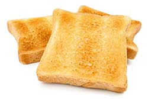

Tantalising Toast

Description
There is nothing more tantalising than toast on Tuesdays.
I am salivating at the very thought of devouring a slice or crunch warm toast with butter and jam.
Ingredients
- Bread
- Butter or margarine
- A comdiment of choice, preferably Jam
Method
- Put bread in the toaster and turn on
- While cooking, prepare condiemtns for slathering
- Once cooked, apply butter followed by condiment of choice
- Merrily consume with haste